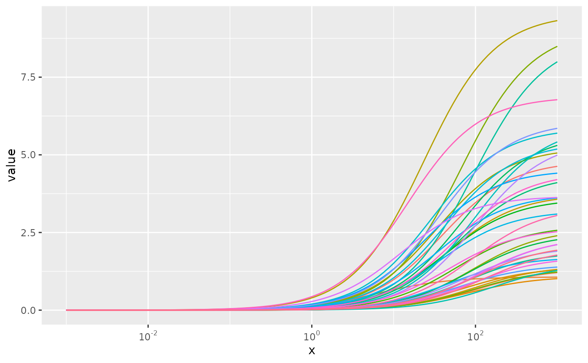

dev-conc-resp
dev-conc-resp.Rmd
library(GeoToxPackage)
library(dplyr, warn.conflicts = FALSE)
library(tidyr)
library(ggplot2)
library(scales)Format data
Split the dose response data into a list by chemical casn.
ice_conc_resp <- split(as.data.frame(geo_tox_data$ice), ~casn)2-parameter Hill fit
Apply the fit_hill function to each of the
chemicals.
fits <- lapply(ice_conc_resp, function(df) {fit_hill(df$logc, df$resp)})
#> Warning in sqrt(diag(solve(-fit$hessian))): NaNs produced
#> Warning in sqrt(diag(solve(-fit$hessian))): NaNs produced
#> Warning in sqrt(diag(solve(-fit$hessian))): NaNs produced
#> Warning in sqrt(diag(solve(-fit$hessian))): NaNs produced
#> Warning in sqrt(diag(solve(-fit$hessian))): NaNs producedExtract fit parameters
Note that estimates of tp.sd and logAC50.sd
that are NA will be replaced with the corresponding
tp and logAC50 values. This imputation will be
indicated by setting tp.sd.imputed and
logAC50.sd.imputed to TRUE.
fit_params <- extract_hill_params(fits)Plot fit parameters
xylim <- range(with(fit_params, c(tp, tp.sd)), na.rm = T)
ggplot(fit_params, aes(tp, tp.sd)) +
geom_abline(linetype = 3) +
geom_point(aes(color = tp.sd.imputed), show.legend = FALSE) +
coord_cartesian(xlim = xylim, ylim = xylim)
xylim <- range(with(fit_params, c(logAC50, logAC50.sd)), na.rm = T)
ggplot(fit_params, aes(logAC50, logAC50.sd)) +
geom_abline(linetype = 3) +
geom_point(aes(color = logAC50.sd.imputed), show.legend = FALSE) +
coord_cartesian(xlim = xylim, ylim = xylim)Plot fits
log10_x <- seq(-3, 3, length.out = 100)
y <- apply(fit_params, 1, function(par) {
tp <- as.numeric(par["tp"])
logAC50 <- as.numeric(par["logAC50"])
tp / (1 + 10^(logAC50 - log10_x))
})
colnames(y) <- names(ice_conc_resp)
df <- as_tibble(y) %>% mutate(x = 10^log10_x, .before = 1)
ggplot(df %>% pivot_longer(!x), aes(x, value, color = name)) +
geom_line(show.legend = FALSE) +
scale_x_log10(labels = scales::label_math(10^.x, format = log10))